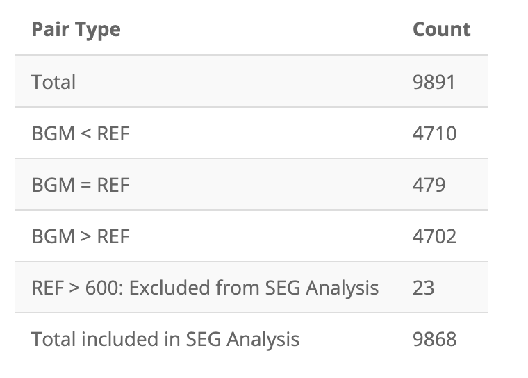

SEG shiny app tables
shiny-app.RmdObjective
In this vignette, I’m going to compare the results from the
segtools package to the shiny application on the Diabetes technology
society website.
Test Data
I’ll load the same test data used in the
GitHub repo (VanderbiltComplete.csv)
github_data_root <-
"https://raw.githubusercontent.com/mjfrigaard/seg-shiny-data/master/Data/"
full_sample_repo <- base::paste0(github_data_root,
"VanderbiltComplete.csv")
test_vand_comp_data <-
vroom::vroom(file = full_sample_repo, delim = ",")
glimpse(test_vand_comp_data)
#> Rows: 9,891
#> Columns: 2
#> $ BGM <dbl> 121, 212, 161, 191, 189, 104, 293, 130, 261, 147, 83, 132, 146, 24…
#> $ REF <dbl> 127, 223, 166, 205, 210, 100, 296, 142, 231, 148, 81, 131, 155, 25…Pair type table
After uploading VanderbiltComplete.csv, the first table
in the Summary Tables tab is the pairs table:

To test the segtools package function, I’ll need to
store the table above in something we can test
(app_pairs_tbl)
app_pairs_tbl = tibble::as_tibble(data.frame(
stringsAsFactors = FALSE,
check.names = FALSE,
`Pair Type` = c(
"Total",
"BGM < REF",
"BGM = REF",
"BGM > REF",
"REF > 600: Excluded from SEG Analysis",
"Total included in SEG Analysis"
),
Count = c(9891L, 4710L, 479L, 4702L, 23L, 9868L)
))
app_pairs_tbl| Pair Type | Count |
|---|---|
| Total | 9891 |
| BGM < REF | 4710 |
| BGM = REF | 479 |
| BGM > REF | 4702 |
| REF > 600: Excluded from SEG Analysis | 23 |
| Total included in SEG Analysis | 9868 |
The output segtools::seg_pairs_table() function is in
the pkg_pairs_tbl
pkg_pairs_tbl <-
seg_pairs_table(data = test_vand_comp_data,
is_path = FALSE)
pkg_pairs_tbl| Pair Type | Count |
|---|---|
| Total | 9891 |
| BGM < REF | 4710 |
| BGM = REF | 479 |
| BGM > REF | 4702 |
| REF > 600: Excluded from SEG Analysis | 23 |
| Total included in SEG Analysis | 9868 |
Test pairs table
Test the application output to the package output:
testthat::test_that("Test pair type table", {
testthat::expect_equal(
# function table
object = pkg_pairs_tbl,
# application table
expected = app_pairs_tbl
)
})
#> Test passed 🥇MARD table
The MARD table in the application is below:

Store the app MARD table in something I can test against the
seg_mard_table() outpput (app_mard).
app_mard <- tibble::tibble(
Total = 9868L,
Bias = "0.6%",
MARD = "7%",
CV = "14.8%",
`Lower 95% Limit of Agreement` = "-28.3%",
`Upper 95% Limit of Agreement` = "29.6%")
app_mard| Total | Bias | MARD | CV | Lower 95% Limit of Agreement | Upper 95% Limit of Agreement |
|---|---|---|---|---|---|
| 9868 | 0.6% | 7% | 14.8% | -28.3% | 29.6% |
I’ll store the output from seg_mard_table() in
pkg_mard:
pkg_mard <- tibble::as_tibble(
seg_mard_table(data = test_vand_comp_data, is_path = FALSE))
pkg_mard| Total | Bias | MARD | CV | Lower 95% Limit of Agreement | Upper 95% Limit of Agreement |
|---|---|---|---|---|---|
| 9868 | 0.6% | 7% | 14.8% | -28.3% | 29.6% |
Test MARD table
Below I test both MARD tabels
testthat::test_that("Test MARD table values", {
testthat::expect_equal(
# function table
object = pkg_mard,
# application table
expected = app_mard
)
})
#> Test passed 🎉Risk grade table

The risk grade level is a little trickier to replicate because of
it’s structure (I need to wrap the output tibble in the
data.frame).
app_risk_grade_table <- as.data.frame(
tibble::tibble(
ID = c(1L, 2L, 3L, 4L, 5L),
`Risk Grade` = c('A', 'B', 'C', 'D', 'E'),
`Number of Pairs` = c(9474L, 349L, 35L, 10L, NA_integer_),
Percent = c('96%', '3.5%', '0.4%', '0.1%', NA_character_),
`Risk Factor Range` = c('0 - 0.5', '> 0.5 - 1.5', '> 1.5 - 2.5',
'> 2.5 - 3.5', '> 3.5'),
)
)
app_risk_grade_table| ID | Risk Grade | Number of Pairs | Percent | Risk Factor Range |
|---|---|---|---|---|
| 1 | A | 9474 | 96% | 0 - 0.5 |
| 2 | B | 349 | 3.5% | > 0.5 - 1.5 |
| 3 | C | 35 | 0.4% | > 1.5 - 2.5 |
| 4 | D | 10 | 0.1% | > 2.5 - 3.5 |
| 5 | E | NA | NA | > 3.5 |
The package function for creating the risk grade table is
seg_risk_grade_table() (which I will store in
pkg_risk_grade_table)
pkg_risk_grade_table <- segtools::seg_risk_grade_table(
data = test_vand_comp_data, is_path = FALSE)
pkg_risk_grade_table| ID | Risk Grade | Number of Pairs | Percent | Risk Factor Range |
|---|---|---|---|---|
| 1 | A | 9474 | 96% | 0 - 0.5 |
| 2 | B | 349 | 3.5% | > 0.5 - 1.5 |
| 3 | C | 35 | 0.4% | > 1.5 - 2.5 |
| 4 | D | 10 | 0.1% | > 2.5 - 3.5 |
| 5 | E | NA | NA | > 3.5 |
Test risk grade table
We’ll limit the test to the Number of Pairs column and
make sure it’s a match.
testthat::test_that("Test risk grade table", {
testthat::expect_equal(
# function table
object = pkg_risk_grade_table$`Number of Pairs`,
# application table
expected = app_risk_grade_table$`Number of Pairs`
)
})
#> Test passed 🎊Risk category/level table
Below is the app display of the risk level table.

Below is a re-creation of this table (for testing)
app_risk_level_table <- as.data.frame(
tibble::tibble(
`SEG Risk Level` = c(0L, 1L, 2L, 3L, 4L, 5L, 6L, 7L),
`SEG Risk Category` = c(
'None',
'Slight, Lower', 'Slight, Higher',
'Moderate, Lower','Moderate, Higher',
'Severe, Lower', 'Severe, Higher',
'Extreme'
),
`Number of Pairs` = c(9474L, 249L, 55L, 24L, 11L, 10L, NA_integer_, NA_integer_),
Percent = c(
'96%', '3%', '0.6%', '0.2%', '0.1%', '0.1%', NA_character_, NA_character_
),
)
)
app_risk_level_table| SEG Risk Level | SEG Risk Category | Number of Pairs | Percent |
|---|---|---|---|
| 0 | None | 9474 | 96% |
| 1 | Slight, Lower | 249 | 3% |
| 2 | Slight, Higher | 55 | 0.6% |
| 3 | Moderate, Lower | 24 | 0.2% |
| 4 | Moderate, Higher | 11 | 0.1% |
| 5 | Severe, Lower | 10 | 0.1% |
| 6 | Severe, Higher | NA | NA |
| 7 | Extreme | NA | NA |
pkg_risk_level_table <- seg_risk_level_table(data = test_vand_comp_data,
is_path = FALSE)
pkg_risk_level_table| SEG Risk Level | SEG Risk Category | Number of Pairs | Percent |
|---|---|---|---|
| 1 | Slight, Lower | 9474 | 96% |
| 2 | Slight, Higher | 294 | 3% |
| 3 | Moderate, Lower | 55 | 0.6% |
| 4 | Moderate, Higher | 24 | 0.2% |
| 5 | Severe, Lower | 11 | 0.1% |
| 6 | Severe, Upper | 10 | 0.1% |
| 0 | None | NA | NA |
| 7 | Extreme | NA | NA |
Test risk level table
We’ll limit the test to the Number of Pairs column and
make sure it’s a match.
waldo::compare(
# function table
x = pkg_risk_level_table$`Number of Pairs`,
# application table
y = app_risk_level_table$`Number of Pairs`
)
#> `old[1:5]`: 9474 294 55 24 11
#> `new[1:5]`: 9474 249 55 24 11